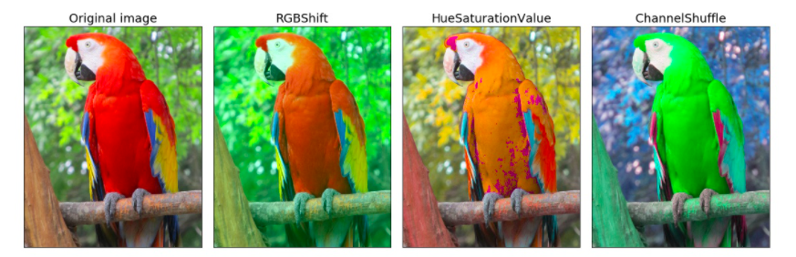
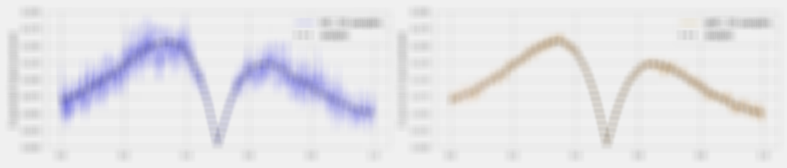
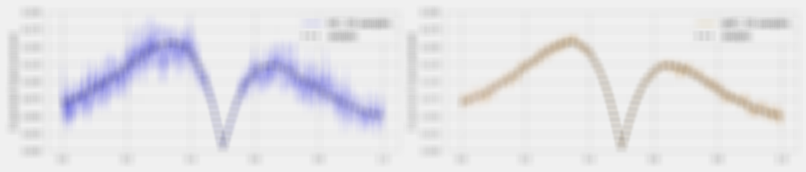
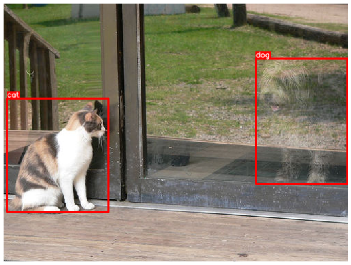
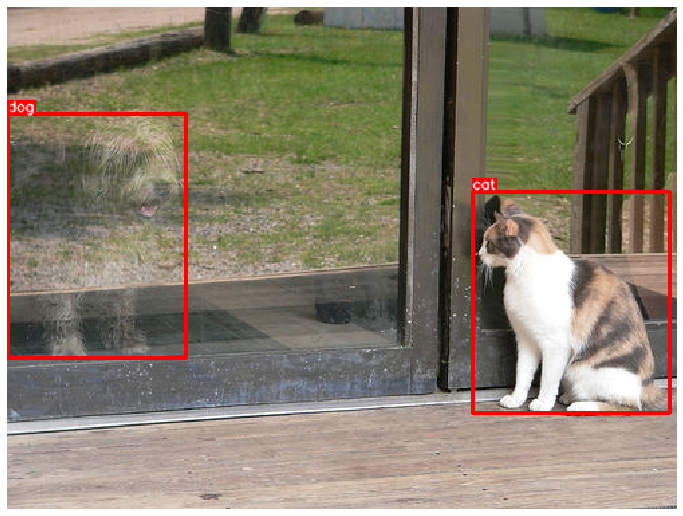
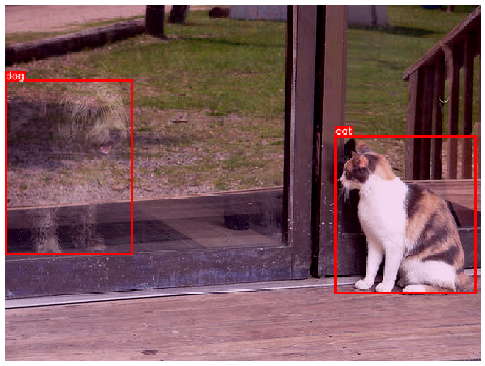

图像数据增强工具Albumentations
学习目标
- 掌握图像数据增强工具Albumentations的“能力”。
- 掌握对目标检测任务进行数据增强的实现。

Albumentations简介
- 整合了70+种图像数据增强方法，针对各种CV常规任务，如分类，目标检测，语义分割等的数据增强，在业界，科学竞赛，科研中的都有很大程度的应用。
Albumentations的增强能力
- 像素级变换
- 空间级变换
- 像素级变换：
- Blur（模糊化）
- CLAHE（对比度均衡化）
- ChannelDropout（颜色通道置0）
- ChannelShuffle（颜色通道打散）
- ColorJitter（随机改变图像的亮度、对比度和饱和度）
- Downscale（通过回缩降低图片质量）
- Emboss（对输入图像进行浮雕并将结果与原始图像叠加）
- Equalize（遮掩均衡）
- FancyPCA（论文中使用的一种综合增强方法）
- FromFloat（对浮点型矩阵的运算方法）
- GaussNoise（对图片添加高斯噪音）
- GaussianBlur（高斯模糊化）
- GlassBlur（玻璃模糊化）
- HueSaturationValue（随机改变色调和饱和度）
- ISONoise（对图片添加传感器噪音，针对移动设备中的增强）
- ImageCompression（图片压缩）
- InvertImg（通过255减去当前像素值实现反转）
- MedianBlur（中值模糊化）
- MotionBlur（运动模糊化）
- MultiplicativeNoise（对图片添加乘性噪音）
- Normalize（对像素进行规范化）
- Posterize（海报化）
- RGBShift（颜色通道变换）
- RandomBrightnessContrast（随机亮度和对比度调节）
- RandomFog（随机雾化）
- RandomGamma（随机调整图片中的gamma值）
- RandomRain（随机添加雨天效果）
- RandomShadow（随机添加阴影）
- RandomSnow（随机添加雪天效果）
- RandomSunFlare（随机添加太阳耀斑）
- RandomToneCurve（随机改变色调曲线）
- Sharpen（锐化特效）
- Solarize（日晒特效）
- Superpixels（超像素特效）
- ToFloat（向浮点型转化）
- ToGray（变成灰度图片）
- ToSepia（变成棕褐图片）
- 示例：
pip install albumentations
# 导入必备的工具包
import albumentations as A
import cv2
# 使用cv2读取图片
image = cv2.imread("./input.png")
image = cv2.cvtColor(image, cv2.COLOR_BGR2RGB)
# 进行一系列的增强操作
transform = A.Compose([
# 运动模糊
A.MotionBlur(),
# 海报化
A.Posterize(),
# 随机雾化
A.RandomFog()
])
# 取出结果并保存图片
transformed = transform(image=image)["image"]
filename = "./output.png"
cv2.imwrite(filename, transformed)
- 效果对比：
 

- 空间级变换：
- 试一试：
- 根据像素级变换的代码，请同学们自己结合文档https://albumentations.ai/docs/尝试空间级的变换。
对目标检测任务进行数据增强的实现
-
说明：
- albumentations的bbox坐标形式类似于pascal_voc，采用极坐标表示，形如：[x_min, y_min, x_max, y_max]，而且albumentations要求坐标表示必须规范化，即使用真实坐标值除以对应的宽高，形如：[98 / 640, 345 / 480, 420 / 640, 462 / 480]。
- 之前的coco是中心坐标表示，形如：[x_min, y_min, width, height]，而yolo是规范化中心坐标表示，形如：[((420 + 98) / 2) / 640, ((462 + 345) / 2) / 480, 322 / 640, 117 / 480]。
-
接下来，我们以coco数据集中的图片为例进行增强，首先下载coco目标检测数据集，或者我们使用的实例：https://cocodataset.org/#explore?id=386298
# 导入必备的工具包
import random
import cv2
from matplotlib import pyplot as plt
import albumentations as A
# 使用cv2读取选择的一张图片
image = cv2.imread('images/000000386298.jpg')
image = cv2.cvtColor(image, cv2.COLOR_BGR2RGB)
# 找到该图片对应的标注信息，coco格式的bbox以及对应的标签
bboxes = [[5.66, 138.95, 147.09, 164.88], [366.7, 80.84, 132.8, 181.84]]
category_ids = [17, 18]
# 以及标签数值对应的实际文本
category_id_to_name = {17: 'cat', 18: 'dog'}
# 接下来我们要可视化一下这个目标检测的用例
# 我们要把这个bbox画在图片上并显示具体的标签文本
# 先定义框的颜色和文本颜色
BOX_COLOR = (255, 0, 0) # Red
TEXT_COLOR = (255, 255, 255) # White
def visualize_bbox(img, bbox, class_name, color=BOX_COLOR, thickness=2):
"""单个可视化目标框函数，参数包括，图片本身，目标框坐标，类别名字，框颜色，以及框的条纹宽度"""
# 使用cv2.rectangle要使用极坐标，所以首先做坐标转换
x_min, y_min, w, h = bbox
x_min, x_max, y_min, y_max = int(x_min), int(x_min + w), int(y_min), int(y_min + h)
# 先根据坐标画上目标框
cv2.rectangle(img, (x_min, y_min), (x_max, y_max), color=color, thickness=thickness)
# 设定参数来获得目标框对应的标签文本大小
((text_width, text_height), _) = cv2.getTextSize(class_name, cv2.FONT_HERSHEY_SIMPLEX, 0.35, 1)
# 再根据文本的宽高调整目标框
cv2.rectangle(img, (x_min, y_min - int(1.3 * text_height)), (x_min + text_width, y_min), BOX_COLOR, -1)
# 最后把文本放在目标框附近，其中设定一系列的文本参数，颜色，线条类型，字体类型等等
cv2.putText(
img,
text=class_name,
org=(x_min, y_min - int(0.3 * text_height)),
fontFace=cv2.FONT_HERSHEY_SIMPLEX,
fontScale=0.35,
color=TEXT_COLOR,
lineType=cv2.LINE_AA,
)
return img
def visualize(image, bboxes, category_ids, category_id_to_name):
"""对每一个目标框进行绘制"""
img = image.copy()
for bbox, category_id in zip(bboxes, category_ids):
class_name = category_id_to_name[category_id]
img = visualize_bbox(img, bbox, class_name)
plt.figure(figsize=(12, 12))
plt.axis('off')
plt.imshow(img)
plt.savefig("./ob_sample.png")
# 调用该函数显示coco图片
visualize(image, bboxes, category_ids, category_id_to_name)

- 接下来就是进行数据增强：
# 使用A构建数据增强流水线
transform = A.Compose(
# 先用一个简单的水平翻转
[A.HorizontalFlip(p=0.5)],
# 因为是目标检测的数据增强，要给出bbox_params，包括重要的format
bbox_params=A.BboxParams(format='coco', label_fields=['category_ids']),
)
# 将图片，bbox以及类别id传入数据增强流水线
transformed = transform(image=image, bboxes=bboxes, category_ids=category_ids)
# 将得到的结果进行可视化
visualize(
transformed['image'],
transformed['bboxes'],
transformed['category_ids'],
category_id_to_name,
)

- 这里我们可以使用更加复杂的数据增强方式：
# 使用A构建数据增强流水线
transform = A.Compose([
A.HorizontalFlip(p=0.5),
A.ShiftScaleRotate(p=0.5),
A.RandomBrightnessContrast(p=0.3),
A.RGBShift(r_shift_limit=30, g_shift_limit=30, b_shift_limit=30, p=0.3)],
# 因为是目标检测的数据增强，要给出bbox_params，包括重要的format
bbox_params=A.BboxParams(format='coco', label_fields=['category_ids']),
)
# 将图片，bbox以及类别id传入数据增强流水线
transformed = transform(image=image, bboxes=bboxes, category_ids=category_ids)
# 将得到的结果进行可视化
visualize(
transformed['image'],
transformed['bboxes'],
transformed['category_ids'],
category_id_to_name,
)

小节总结
- 学习了图像数据增强工具Albumentations的“能力”。
- 掌握了对目标检测任务进行数据增强的实现。